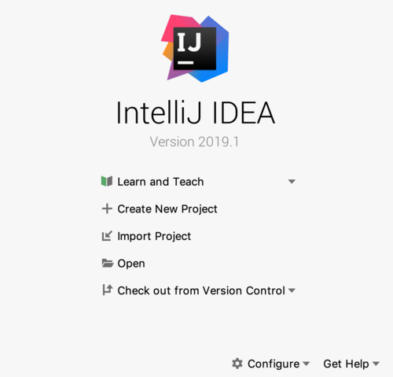
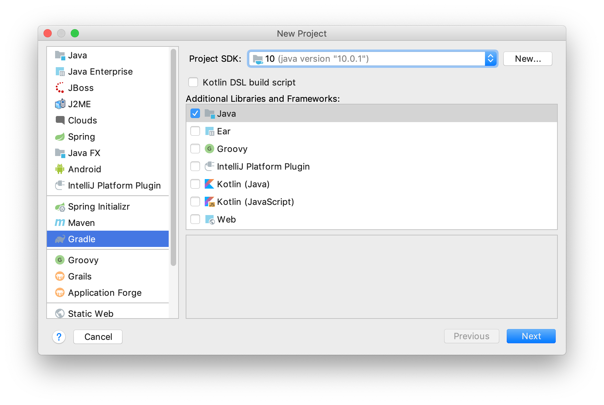
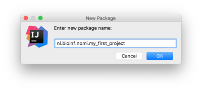
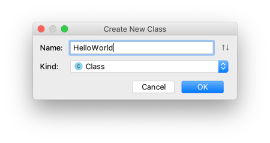
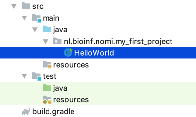
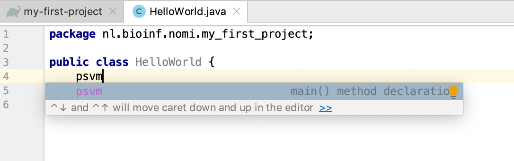

A first IntelliJ project
This course uses the IntelliJ Idea Integrated Development Environment (IDE) to develop Java programs. This chapter deals with using IntelliJ Idea to create Java applications.
Dependency management
As you probably already know by now, code you write is
dependent on other code. This can be code native to the platform (such as the
integer "class" in R, or the str class in Python), but it can also be code
that is not distributed with the standard platform (such as ggplot2 in R).
These "non-core" code dependencies need to be managed, especially with a compiled
language such as Java. Several tools exist for dependency management in Java. In
this course we'll use Gradle. It does much more than dependency management, but for
now this is the relevant aspect.
A first project
Start IntelliJ and select "+ Create New Project" from the start screen.

In the New Project wizard, select Gradle on the left menu and then a project SDK (Standard Development Kit) - the examples shows Java 10. Only check Java in the Libraries section.

Click "Next". In the next window, give your project a GroupID, an ArtifactID and a Version.

The group ID should be a unique identifier; in Java this is usually the web domain of you or your employer, reversed and with a project name appended (note the underscores). The artifact ID is the name of your project. The version speaks for itself.
Click "Next".
The last window lets you specify some Gradle-specific stuff. Fill out as shown below.

Click "Next".

Click "Finish". A fresh Gradle-managed Java project will be created with a layout as shown below.

Several folders and files have been created. At the root of the project there is a build.gradle file. It contains the configuration of your project. One dependency has been added: JUnit 4 which is a testing framework. Since this is an older version, we'll immediately change this into JUnit5. Replace as shown below:
dependencies {
//don't use JUnit 4
//testCompile group: 'junit', name: 'junit', version: '4.12'
//JUnit 5 is better
testImplementation 'org.junit.jupiter:junit-jupiter-api:5.1.0'
testRuntimeOnly 'org.junit.jupiter:junit-jupiter-engine:5.1.0'
}
Maybe IntelliJ suggests something about auto-import; accept this.
Finally, let's create some code. Right-click on the src/main/java folder and select "New" -> "Package" and give it the same name as your group ID (it is also in build.gradle).

Select the new package, right-click it and select "New" -> "Java Class". Name it HelloWorld (do not give any file extension!) and click "OK".
 
The class file will open in an editor. Here is a taste of the IntelliJ magic. Within the class, put the caret below the line public class HelloWorld. Next, type "psvm" and press tab.


A brand new main() method is created. Here is another extremely useful shortcut, assuming the caret is within main(). Type "sout" followed by the tab.

The statement System.out.println(); appears. Within this print call, type "Hello, World". Your class should look like this, except that your package will be named differently:
package nl.bioinf.nomi.my_first_project;
public class HelloWorld {
public static void main(String[] args) {
System.out.println("Hello, World");
}
}
Click the green triangle within the editor border and select "run 'HelloWorld.main()' Note the shortcut for running main: ^ + shift + R.

In the console output on the lower pane, you will see this output, including the "Hello, World" message:
20:38:51: Executing task 'HelloWorld.main()'... > Task :compileJava > Task :processResources NO-SOURCE > Task :classes > Task :HelloWorld.main() Hello, World BUILD SUCCESSFUL in 0s 2 actionable tasks: 2 executed 20:38:52: Task execution finished 'HelloWorld.main()'.
The "Tasks" are gradle stuff. It says, amongst others, that the source is compiled (Java is a compiled language!) and main() is run. You may notice that a new folder has appeared at the root of your project: build. Have a look at what's inside.
That's it. This is how you create a Gradle-managed Java project, put a package in it, a first class at the correct location and within that, a main() method.
These are the keyboard shortcuts you should remember:
psvm- create main()sout- create print statement^ + shift + R- run main()
Next up: some really basic Java stuff to get a feel for the language.